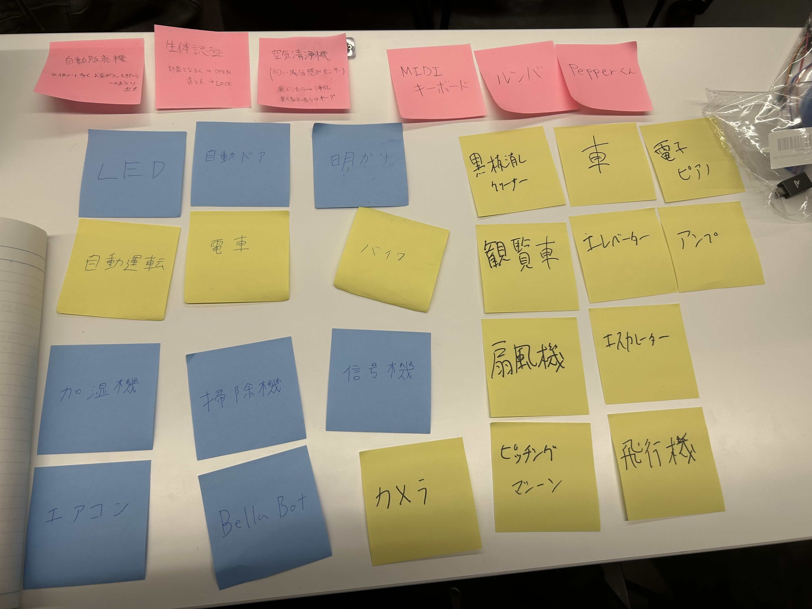
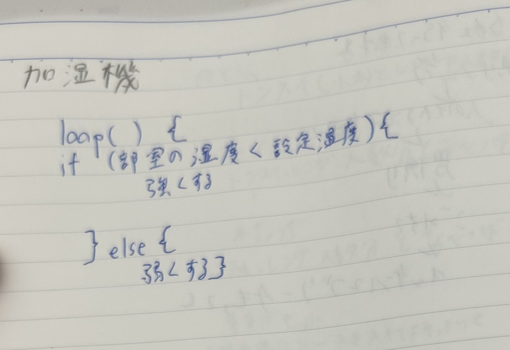
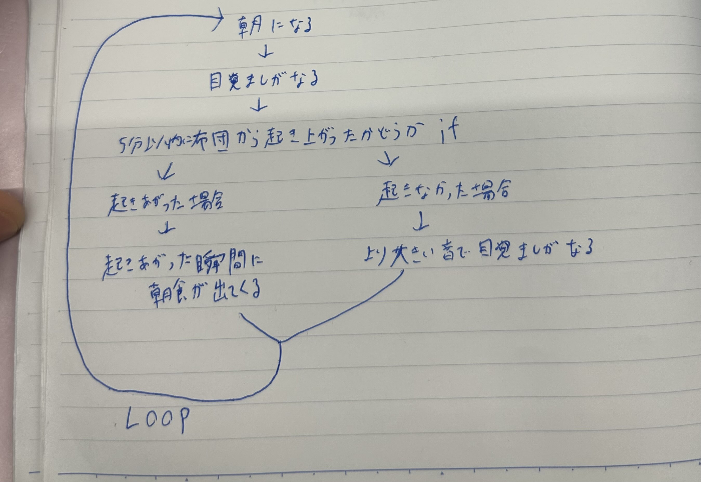

Lチカ
①プログラムでモノを動かしているものにはどんなものがあるか？グループワークした内容

今思い返すとほとんどがプログラムで動いているものというより、特定の命令(リモコンなど)を受けることによって動くものが多かったように思います。
②↑で挙げたものをプログラミング的な思考で手順を説明

雑ですが加湿器の自動的に室内の湿度を調整してくれる機能はこんな感じだと思います。
③プログラミングでどんなことができそうか？自分で考えたアイディア

多少趣旨が違うかもしれませんが、朝に弱いので目覚ましにこんな追加機能があればいいなと思いました。
起きなかったときにより大きい音で目覚ましが鳴る方がメインなので、起き上がった場合の方はなんでもいいです。